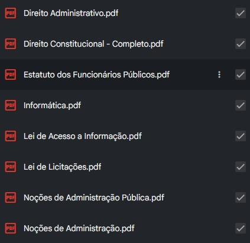
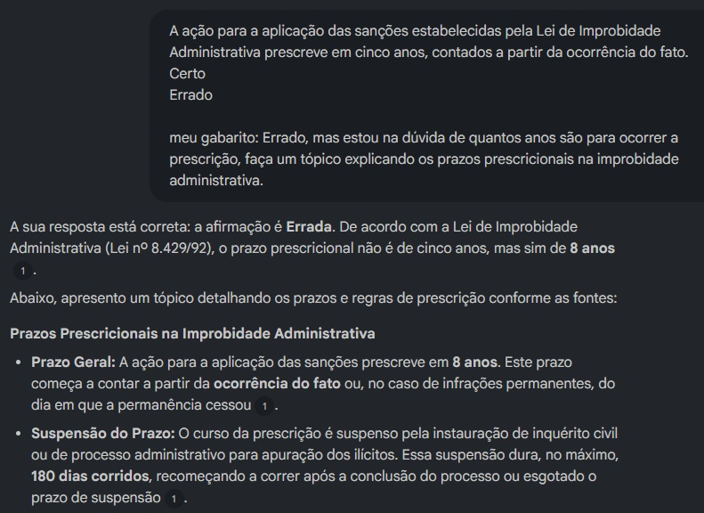
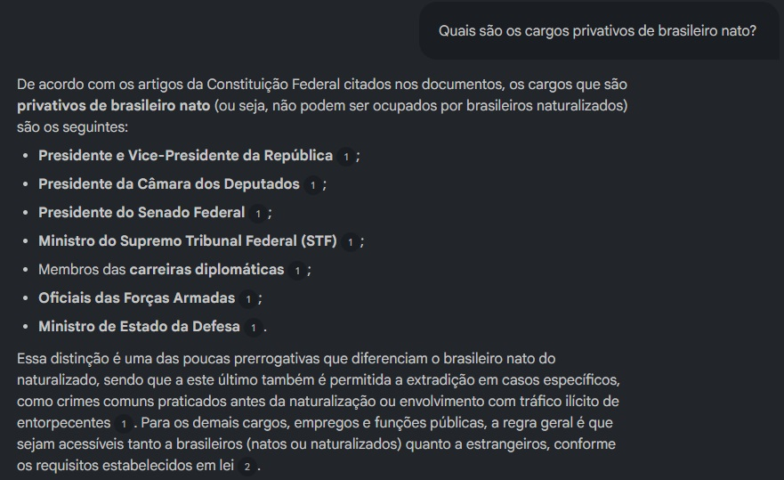

Visão Geral do Trabalho
Nesse projeto foi utilizado o Gemini Notebook com o objetivo de auxiliar nos estudos para concursos públicos, a ferramenta pode trazer informações de diversas fontes de forma ágil. O Gemini Notebook pode ser utizado por estudantes de diversos níveis, pois a ferramenta pode apresentar conteúdos completos, tirar dúvidas e auxiliar nas revisões.
Carregamento das Fontes
Foram inseridos documentos em formato PDF contendo os resumos e materiais necessários para a consulta

Figura 1: Resumos contendo o conteúdo programático
Prompts
Foram formulados os prompts utilizados para a obtenção de resumos e revisões

Figura 2: Foi utilizado um prompt para resolução de questões, o intuito é utilizar a consulta para revisar tópicos das matérias que precisam de reforço.

Figura 3: Além de questões, prompts mais simples com dúvidas pontuais também são muito úteis.
Conclusões
- Eficiência no Consumo de informações: O Gemini Notebook pode disponibilizar informações de maneira rápida, evitando a perda de tempo procurando o tópico dentro de uma grande quantidade de informações.
- Fontes: As fontes se tornam mais confiáveis, o usuário que fornece o material ou indica um link, diminui o risco de utilizar materiais com informações erradas.
- Facilidade: É uma ferramenta simples de usar, oferece diversos recursos que podem auxiliar bastante nos estudos.